7 简单的机器学习
代码提供：
PartI 徐乐瑶 黄舜尧 黄恺潼
PartII 曾子尧
主要内容：
PartI -1.决策树模型 -2.随机森林模型
PartII 应用：根据FIFA数据预测足球运动员身价
7.1 决策树模型
预测鸢尾花品种对其植株特征影响的决策树模型分析
#读取环境
library(rpart)
library(rpart.plot)
library(readr)
library(ggplot2)
#iris
data("iris")
attach(iris)
#data split 数据划分
s = sample(c(1:150),120,replace = F)
trainset = iris[s,]
testset = iris[-s,]
#train 模型构建
fit1 = rpart(Species ~ .,data = trainset)
summary(fit1)## Call:
## rpart(formula = Species ~ ., data = trainset)
## n= 120
##
## CP nsplit rel error xerror xstd
## 1 0.5063291 0 1.00000000 1.13924051 0.06004325
## 2 0.4683544 1 0.49367089 0.68354430 0.06898444
## 3 0.0100000 2 0.02531646 0.02531646 0.01775163
##
## Variable importance
## Petal.Width Petal.Length Sepal.Length Sepal.Width
## 34 31 21 14
##
## Node number 1: 120 observations, complexity param=0.5063291
## predicted class=setosa expected loss=0.6583333 P(node) =1
## class counts: 41 40 39
## probabilities: 0.342 0.333 0.325
## left son=2 (41 obs) right son=3 (79 obs)
## Primary splits:
## Petal.Length < 2.45 to the left, improve=40.48966, (0 missing)
## Petal.Width < 0.8 to the left, improve=40.48966, (0 missing)
## Sepal.Length < 5.45 to the left, improve=26.33864, (0 missing)
## Sepal.Width < 3.15 to the right, improve=17.85513, (0 missing)
## Surrogate splits:
## Petal.Width < 0.8 to the left, agree=1.000, adj=1.000, (0 split)
## Sepal.Length < 5.45 to the left, agree=0.908, adj=0.732, (0 split)
## Sepal.Width < 3.25 to the right, agree=0.850, adj=0.561, (0 split)
##
## Node number 2: 41 observations
## predicted class=setosa expected loss=0 P(node) =0.3416667
## class counts: 41 0 0
## probabilities: 1.000 0.000 0.000
##
## Node number 3: 79 observations, complexity param=0.4683544
## predicted class=versicolor expected loss=0.4936709 P(node) =0.6583333
## class counts: 0 40 39
## probabilities: 0.000 0.506 0.494
## left son=6 (42 obs) right son=7 (37 obs)
## Primary splits:
## Petal.Width < 1.75 to the left, improve=35.684150, (0 missing)
## Petal.Length < 4.75 to the left, improve=30.630030, (0 missing)
## Sepal.Length < 6.15 to the left, improve=10.839130, (0 missing)
## Sepal.Width < 2.45 to the left, improve= 2.973036, (0 missing)
## Surrogate splits:
## Petal.Length < 4.75 to the left, agree=0.911, adj=0.811, (0 split)
## Sepal.Length < 6.15 to the left, agree=0.759, adj=0.486, (0 split)
## Sepal.Width < 2.95 to the left, agree=0.633, adj=0.216, (0 split)
##
## Node number 6: 42 observations
## predicted class=versicolor expected loss=0.04761905 P(node) =0.35
## class counts: 0 40 2
## probabilities: 0.000 0.952 0.048
##
## Node number 7: 37 observations
## predicted class=virginica expected loss=0 P(node) =0.3083333
## class counts: 0 0 37
## probabilities: 0.000 0.000 1.000rpart.plot(fit1,type = 2)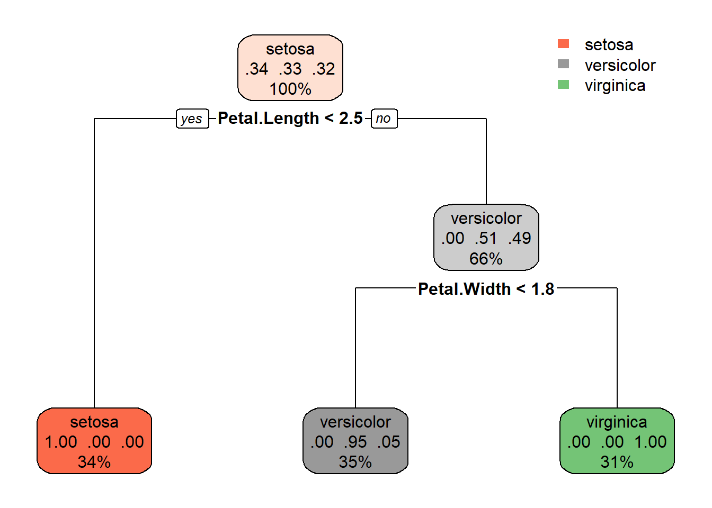
#predict
pre = predict(fit1,testset)
library(rpart)
m<-rpart(Species~.,data = iris)
plot(m,compress = T,margin = 0.2)
text(m,cex=1.5)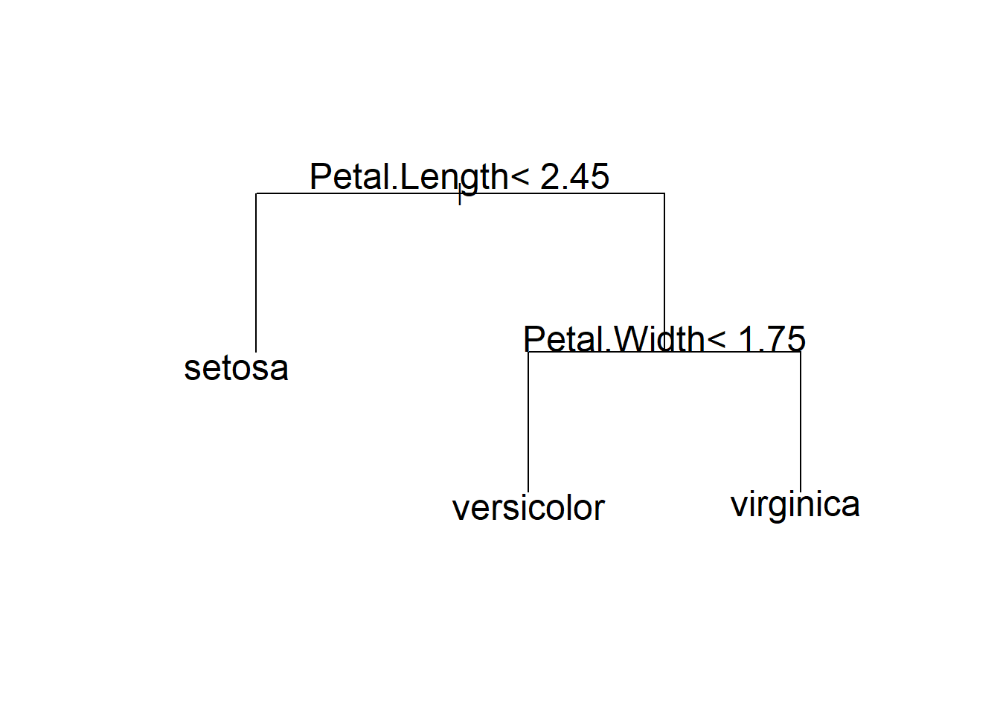
library(rpart.plot)
prp(m,type=4,extra=2,digits=3)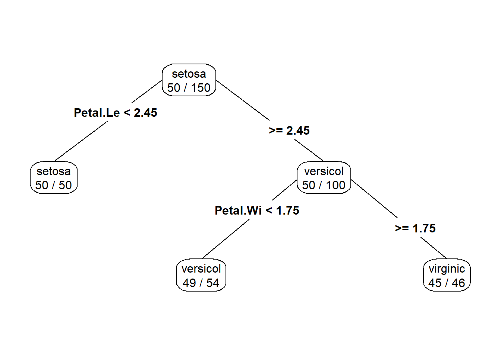
library(party)## Loading required package: grid## Loading required package: mvtnorm## Loading required package: modeltools## Loading required package: stats4## Loading required package: strucchange## Loading required package: zoo##
## Attaching package: 'zoo'## The following objects are masked from 'package:base':
##
## as.Date, as.Date.numeric## Loading required package: sandwich##
## Attaching package: 'strucchange'## The following object is masked from 'package:stringr':
##
## boundary##
## Attaching package: 'party'## The following object is masked from 'package:dplyr':
##
## wherem<-ctree(Species~.,data=iris)
plot(m)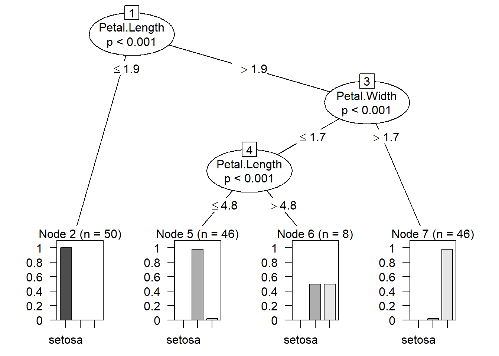
levels(iris$Species)## [1] "setosa" "versicolor" "virginica"7.2 随机森林模型
预测华沙的公寓价格的随机森林模型分析
##读取环境
library("DALEX")## Welcome to DALEX (version: 2.4.3).
## Find examples and detailed introduction at: http://ema.drwhy.ai/##
## Attaching package: 'DALEX'## The following object is masked from 'package:dplyr':
##
## explainlibrary("randomForest")## randomForest 4.7-1.1## Type rfNews() to see new features/changes/bug fixes.##
## Attaching package: 'randomForest'## The following object is masked from 'package:dplyr':
##
## combine## The following object is masked from 'package:ggplot2':
##
## marginlibrary("ggplot2")
library("rms")## Loading required package: Hmisc##
## Attaching package: 'Hmisc'## The following objects are masked from 'package:dplyr':
##
## src, summarize## The following objects are masked from 'package:base':
##
## format.pval, units##
## Attaching package: 'rms'## The following object is masked from 'package:modeltools':
##
## Predict##读取数据
apartments <- apartments
head(apartments)## m2.price construction.year surface floor no.rooms district
## 1 5897 1953 25 3 1 Srodmiescie
## 2 1818 1992 143 9 5 Bielany
## 3 3643 1937 56 1 2 Praga
## 4 3517 1995 93 7 3 Ochota
## 5 3013 1992 144 6 5 Mokotow
## 6 5795 1926 61 6 2 Srodmiescie##使用并解释随机森林模型
set.seed(72)
apartments_rf <- randomForest(m2.price ~ ., data = apartments)
explainer_apartments_rf <- DALEX::explain(model = apartments_rf,
data = apartments_test[,-1],
y = apartments_test$m2.price,
label = "Random Forest")## Preparation of a new explainer is initiated
## -> model label : Random Forest
## -> data : 9000 rows 5 cols
## -> target variable : 9000 values
## -> predict function : yhat.randomForest will be used ( default )
## -> predicted values : No value for predict function target column. ( default )
## -> model_info : package randomForest , ver. 4.7.1.1 , task regression ( default )
## -> predicted values : numerical, min = 1985.837 , mean = 3506.107 , max = 5788.052
## -> residual function : difference between y and yhat ( default )
## -> residuals : numerical, min = -762.3422 , mean = 5.416971 , max = 1318.093
## A new explainer has been created!## 模型可视化
model_performance_ranger_apartments <- model_performance(explainer_apartments_rf )
model_performance_ranger_apartments## Measures for: regression
## mse : 80061.77
## rmse : 282.9519
## r2 : 0.9012564
## mad : 169.0738
##
## Residuals:
## 0% 10% 20% 30% 40% 50%
## -762.342192 -289.095065 -215.594108 -156.778789 -109.479193 -57.127519
## 60% 70% 80% 90% 100%
## 5.668714 87.171569 200.940812 402.184651 1318.092741plot(model_performance_ranger_apartments)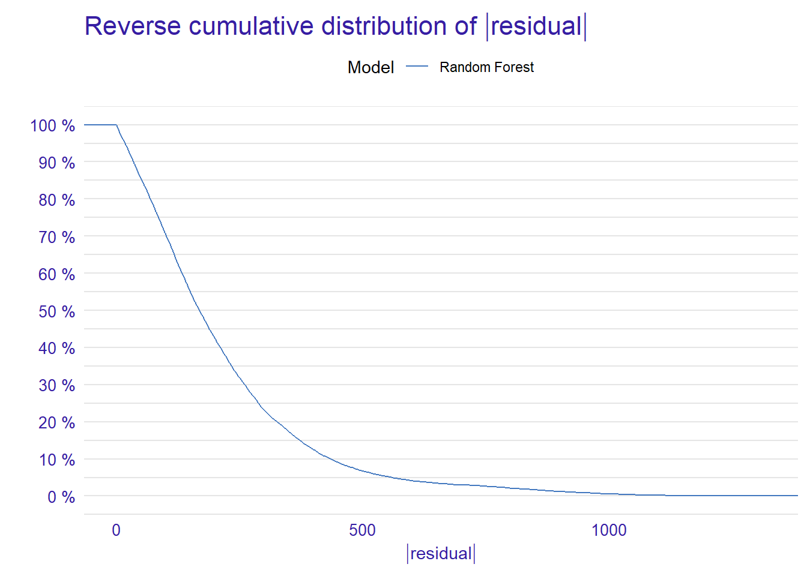
## 变量重要性度量
vi_rf <- model_parts(explainer_apartments_rf)
plot(vi_rf) 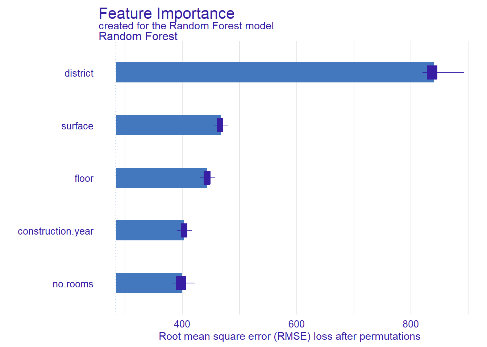
##使用表面和施工年份两个重要变量和 PD 配置文件来评估模型性能
pdp_surface_rf <- model_profile(explainer = explainer_apartments_rf, variables = "surface")
pdp_constrction.year_rf <- model_profile(explainer = explainer_apartments_rf, variables = "construction.year")
plot(pdp_surface_rf) 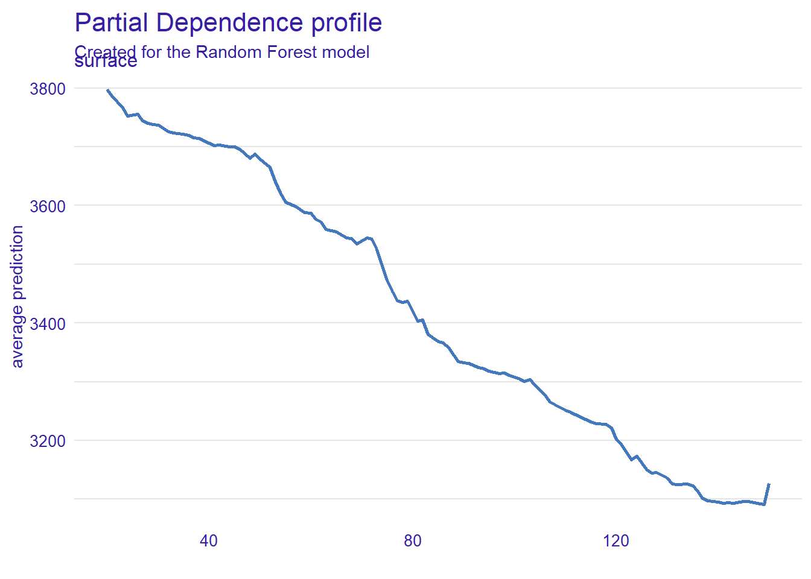
plot(pdp_constrction.year_rf) 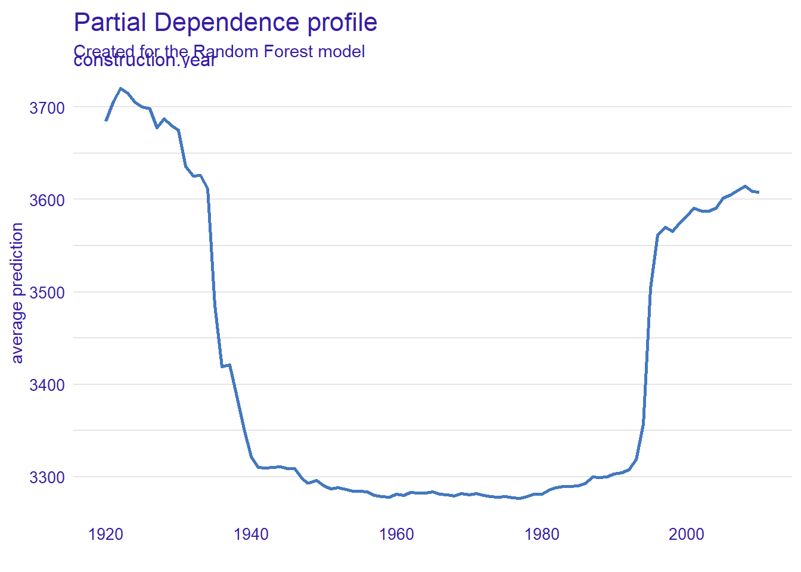
##预测房价
predict(apartments_rf, apartments_test[1:72,])## 1001 1002 1003 1004 1005 1006 1007 1008
## 4214.084 3178.061 2695.787 2744.775 2951.069 2999.450 3325.692 2662.586
## 1009 1010 1011 1012 1013 1014 1015 1016
## 2827.747 4231.489 3198.826 2737.938 4375.699 3109.098 3938.727 3184.121
## 1017 1018 1019 1020 1021 1022 1023 1024
## 4307.783 4069.748 4452.784 2286.641 3297.630 3672.018 4332.968 2830.935
## 1025 1026 1027 1028 1029 1030 1031 1032
## 3382.471 4059.084 2736.103 2986.361 3762.799 4135.743 2533.184 3706.525
## 1033 1034 1035 1036 1037 1038 1039 1040
## 5117.775 3719.939 3945.399 4439.944 3564.239 2337.870 3035.085 3705.500
## 1041 1042 1043 1044 1045 1046 1047 1048
## 4470.851 3219.128 2809.955 2688.750 4847.457 3657.901 4405.674 4157.527
## 1049 1050 1051 1052 1053 1054 1055 1056
## 3650.222 3188.809 2780.834 2519.497 3230.555 2637.206 3169.776 3448.061
## 1057 1058 1059 1060 1061 1062 1063 1064
## 3076.687 3642.569 3544.335 2402.510 3278.932 4280.645 3941.493 3231.770
## 1065 1066 1067 1068 1069 1070 1071 1072
## 3430.896 3548.905 3888.528 4020.859 3991.719 2182.934 2213.622 3075.885##模型的预测值与观察值间的关系
md_rf <- model_diagnostics(explainer_apartments_rf)
plot(md_rf, variable = "y", yvariable = "y_hat") +
scale_x_continuous("Ture value of m2.price") +
scale_y_continuous("Predicted m2.price") +
geom_abline(colour = "red", intercept = 0, slope = 1) +
ggtitle("Predicted and observed house prices", "")## `geom_smooth()` using method = 'gam' and formula = 'y ~ s(x, bs = "cs")'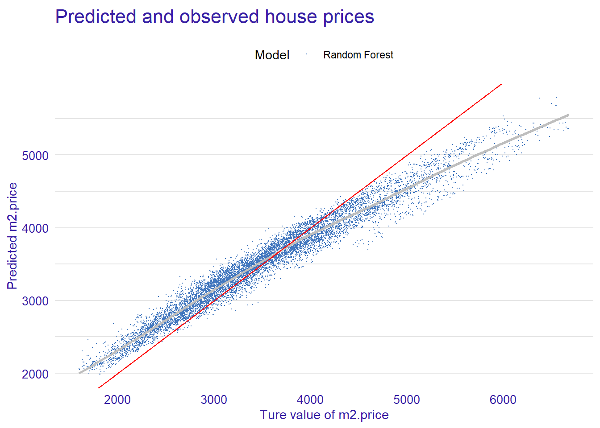
##总结预测性能
predicted_apartments_rf <- predict(apartments_rf, apartments_test)
sqrt(mean((predicted_apartments_rf - apartments_test$m2.price)^2))## [1] 282.95197.3 预测身价
本页面为Rmarkdown用法和DALEX包用法的一个示例。本页面使用DALEX包，基于FIFA20数据，依据GBM deep算法，预测球员身价。
## 读取环境
library("DALEX")
library(gbm)## Loaded gbm 2.1.8.1library(ggplot2)
library(scales)##
## Attaching package: 'scales'## The following object is masked from 'package:purrr':
##
## discard## The following object is masked from 'package:readr':
##
## col_factor#读取、处理数据
fifa <- fifa
fifa$LogValue <- log10(fifa$value_eur)
fifa_small <- fifa[,-c(1, 2, 3, 4, 5)]
##建立预测模型
fifa_gbm_deep <- gbm(LogValue~., data = fifa_small, n.trees = 250,
interaction.depth = 4, distribution = "gaussian")
fifa_gbm_exp_deep <- DALEX::explain(fifa_gbm_deep,
data = fifa_small, y = 10^fifa_small$LogValue,
predict_function = function(m,x) 10^predict(m, x, n.trees = 250),
label = "GBM deep")## Preparation of a new explainer is initiated
## -> model label : GBM deep
## -> data : 5000 rows 38 cols
## -> target variable : 5000 values
## -> predict function : function(m, x) 10^predict(m, x, n.trees = 250)
## -> predicted values : No value for predict function target column. ( default )
## -> model_info : package gbm , ver. 2.1.8.1 , task regression ( default )
## -> predicted values : numerical, min = 244198.5 , mean = 7329481 , max = 104789967
## -> residual function : difference between y and yhat ( default )
## -> residuals : numerical, min = -22474906 , mean = 143805.9 , max = 22083559
## A new explainer has been created!##查看模型
model_performance(fifa_gbm_exp_deep)## Measures for: regression
## mse : 4.116765e+12
## rmse : 2028981
## r2 : 0.9476419
## mad : 588852.9
##
## Residuals:
## 0% 10% 20% 30% 40% 50%
## -22474906.5 -1279068.3 -661008.8 -364965.6 -157909.1 24781.0
## 60% 70% 80% 90% 100%
## 233663.9 505202.7 913586.5 1652537.1 22083559.0##模型可视化
fifa_md_gbm_deep <- model_diagnostics(fifa_gbm_exp_deep)
plot(fifa_md_gbm_deep,
variable = "y", yvariable = "y_hat") +
scale_x_continuous("Value in Euro", trans = "log10",
labels = dollar_format(suffix = "€", prefix = "")) +
scale_y_continuous("Predicted value in Euro", trans = "log10",
labels = dollar_format(suffix = "€", prefix = "")) +
geom_abline(slope = 1) +
ggtitle("Predicted and observed players' values", "") ## `geom_smooth()` using method = 'gam' and formula = 'y ~ s(x, bs = "cs")'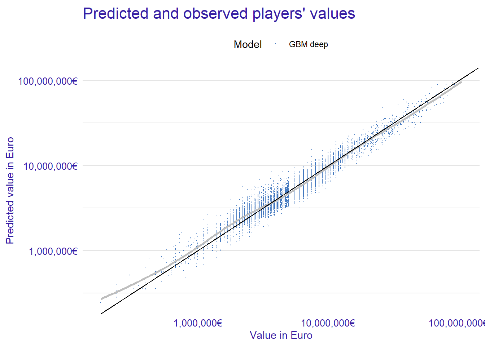
## 球员各数据重要度展示
fifa_mp_gbm_deep <- model_parts(fifa_gbm_exp_deep)
plot(fifa_mp_gbm_deep, max_vars = 20,
bar_width = 4, show_boxplots = FALSE) 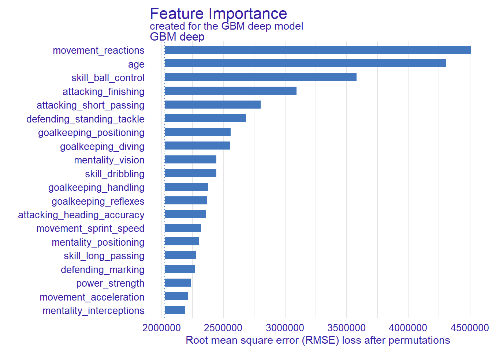
##球员 反应、控球、终结能力、年龄对身价影响
selected_variables <- c("movement_reactions", "skill_ball_control", "attacking_finishing", "age")
fifa19_pd_deep <- model_profile(fifa_gbm_exp_deep,
variables = selected_variables)
plot(fifa19_pd_deep)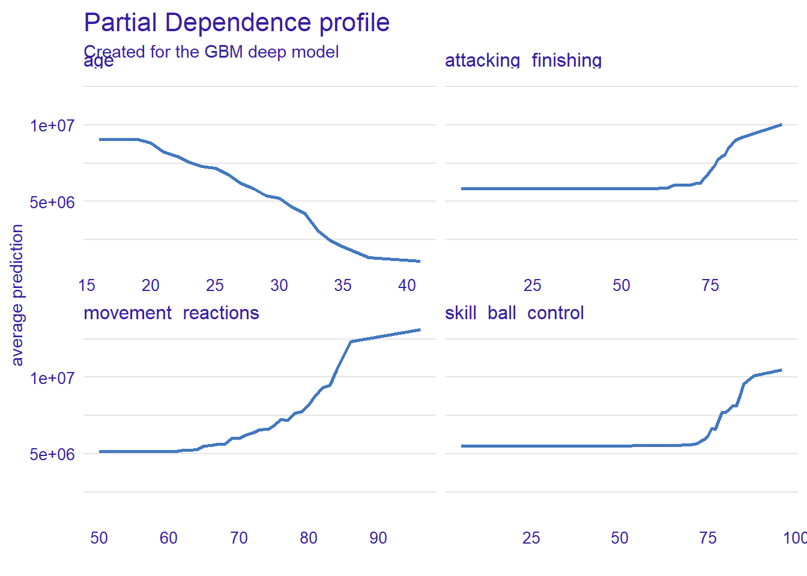
#预测梅西身价
fifa_bd_gbm_M <- predict_parts(fifa_gbm_exp_deep,
new_observation = fifa["L. Messi",],
type = "break_down")
plot(fifa_bd_gbm_M) +
scale_y_continuous("Predicted value in Euro",
labels = dollar_format(suffix = "€", prefix = "")) +
ggtitle("Break-down plot for L.Messi","") ## Scale for y is already present.
## Adding another scale for y, which will replace the existing scale.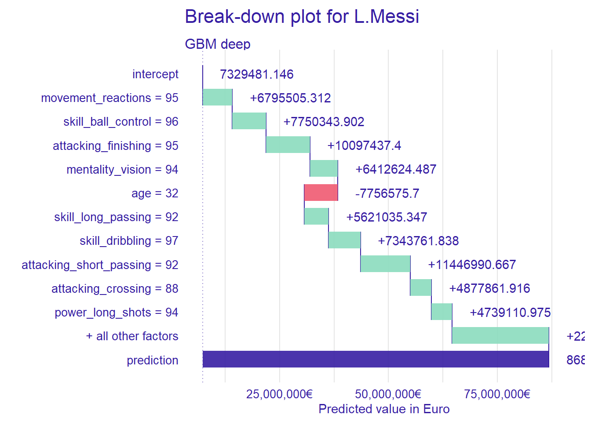
fifa_shap_gbm_M <- predict_parts(fifa_gbm_exp_deep,
new_observation = fifa["L. Messi",],
type = "shap")
plot(fifa_shap_gbm_M, show_boxplots = FALSE) +
scale_y_continuous("Estimated value in Euro",
labels = dollar_format(suffix = "€", prefix = "")) +
ggtitle("Shapley values for L.Messi","")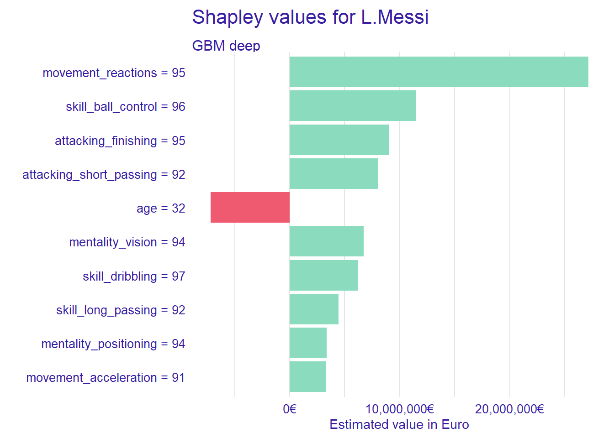
#预测姆巴佩身价
fifa_bd_gbm_MBP <- predict_parts(fifa_gbm_exp_deep,
new_observation = fifa["K. Mbappe",],
type = "break_down")
plot(fifa_bd_gbm_MBP) +
scale_y_continuous("Predicted value in Euro",
labels = dollar_format(suffix = "€", prefix = "")) +
ggtitle("Break-down plot for MBP","") ## Scale for y is already present.
## Adding another scale for y, which will replace the existing scale.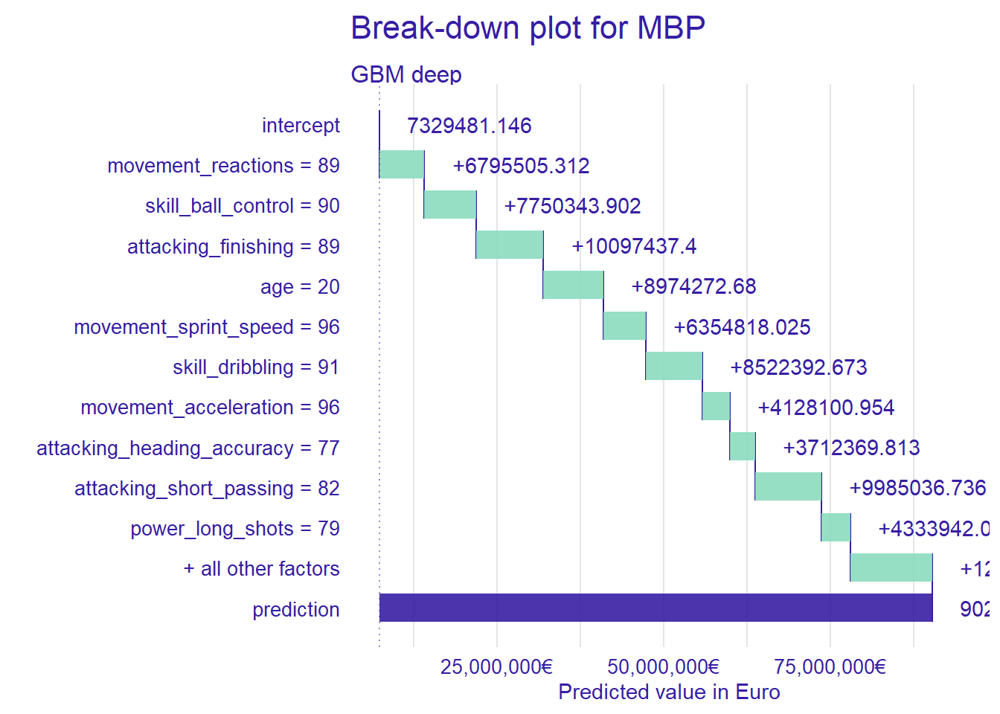
fifa_shap_gbm_MBP <- predict_parts(fifa_gbm_exp_deep,
new_observation = fifa["K. Mbappe",],
type = "shap")
plot(fifa_shap_gbm_MBP, show_boxplots = FALSE) +
scale_y_continuous("Estimated value in Euro",
labels = dollar_format(suffix = "€", prefix = "")) +
ggtitle("Shapley values for MBP","")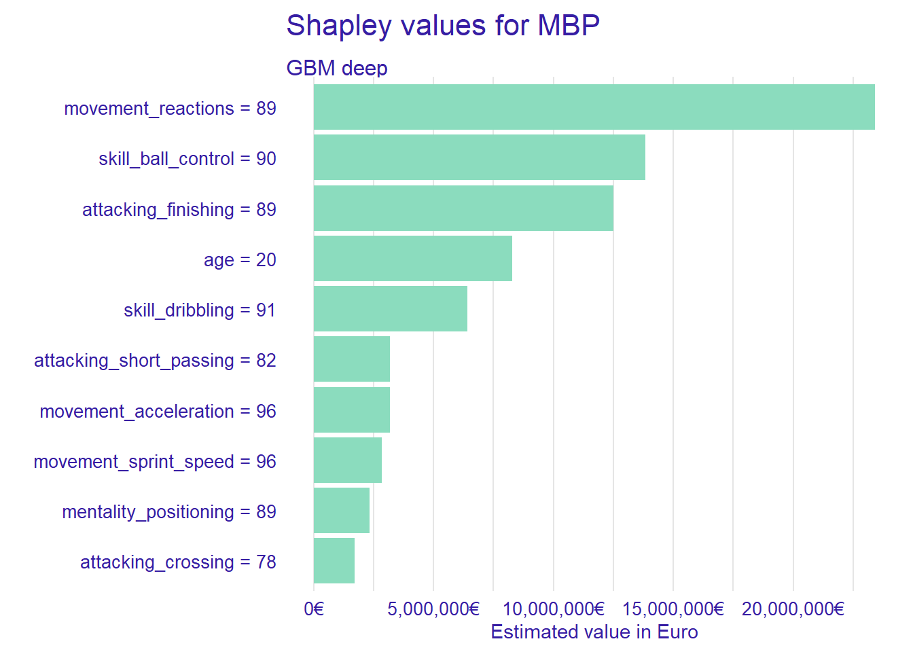
#预测内马尔
fifa_bd_gbm_NM <- predict_parts(fifa_gbm_exp_deep,
new_observation = fifa["Neymar Jr",],
type = "break_down")
plot(fifa_bd_gbm_NM) +
scale_y_continuous("Predicted value in Euro",
labels = dollar_format(suffix = "€", prefix = "")) +
ggtitle("Break-down plot for neymar","") ## Scale for y is already present.
## Adding another scale for y, which will replace the existing scale.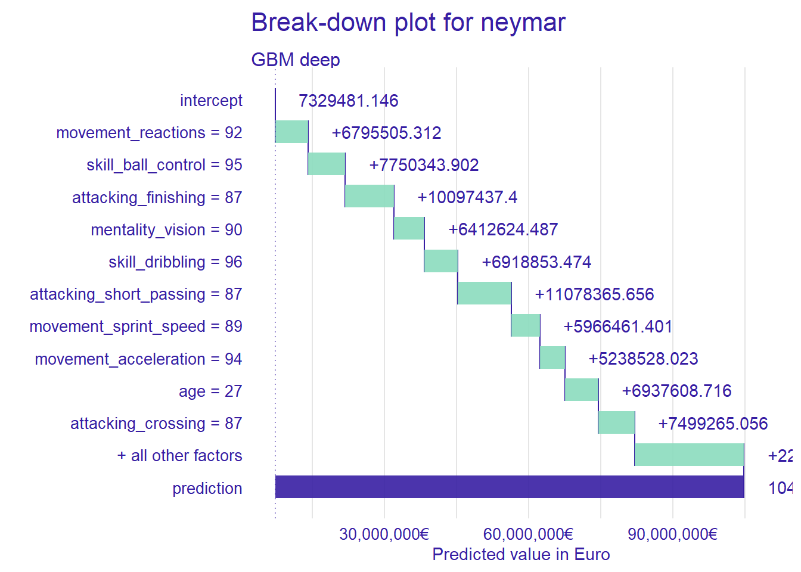